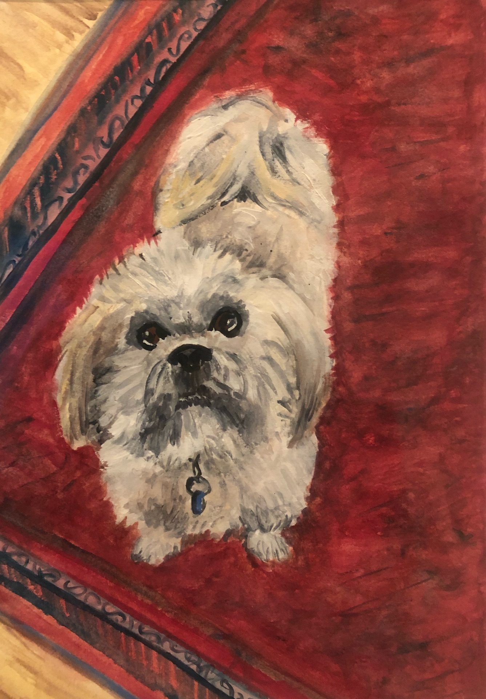

According to American ornithology.org, what we know as the “calling birds” from the Twelve Days of Christmas were originally “colly birds.” The “colly bird” referred to the European Blackbird (Turdus Merula), since “colly” meant “black,” as in “coaly.”
Therefore, “four colly birds” actually means “four blackbirds”.
Here you can find examples of my paintings and drawings. Please email me directly for information on prices and sizing.
In August 2020, I moved to Olean, New York from Colorado in the midst of the COVID-19 global pandemic. Because there was not a lot that I could do to meet new people, instead I became intimately acquainted with the surrounding scenery of my new home – the land, the built environment, and the animals.
I'm especially fascinated by old structures and the way they merge into the landscape - the built environment surrenders to the power of the natural environment via moisture, cold, heat, and time. In these paintings, I use gouache, watercolor, soft pastel, oil pastel and charcoal to create images that highlight the smallness of humans and the largeness of open space.
Since the beginning of the pandemic, most of us were required to slow down and adapt to a smaller, quieter version of our lives. In this quieter version of my own experience, I think of my artwork as a lens that focuses intently and lovingly on moments of extraordinary light, striking lines, and layers of color buried within the ordinary.
This is a new series (as of 2022), and it happened entirely by accident. I was trying to come up with a piece that would be suitable for my husband’s computer science professor office that wouldn’t be too literal. When I dribbled some paint on a nearby canvas one day, I loved the movement of the paint and wondered how I could manipulate this movement. The result has been layers of masking fluid and gouache that form dozens of connection points. The concept of a network is one we encounter daily, but we don’t often visualize.
My friends and family have come up with a variety of ways of describing what these images look like to them. My favorite might be my mom’s comments: “Cells and webbing and arteries and circuitry and connections- our lives!”
I love commissions. Let me know if there’s a special project you’re thinking about. I especially love pet portraits. I’ve also done wedding jewelry and other custom jewelry pieces.

Tashi. 2019. Watercolor.